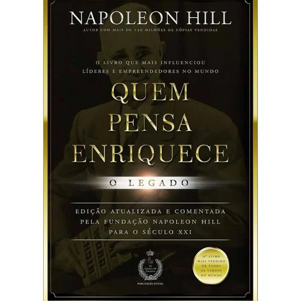

O poder da Autorresponsabilidade
Muitas pessoas têm consciência de que precisam assumir as rédeas da própria vida, porém não sabem como fazer isso na prática.
Este livro traz ao leitor o conceito de autorresponsabilidade. Trata-se de um manual que apresenta a metodologia das 6 leis para a conquista da autorresponsabilidade, de modo que o leitor assuma o comando de sua vida.
Aplicando esse conceito, você será capaz de levar alta performance à vida pessoal e profissional, saindo de um estado não satisfatório para uma vida de abundância e de sucesso.
Aqui você vai aprender a:
1. Calar-se em vez de criticar.
2. Dar sugestão em vez de reclamar.
3. Buscar a solução em vez de buscar culpados.
4. Fazer-se de vencedor em vez de vitimizar-se.
5. Aprender com os erros em vez de justificá-los.
6. Julgar as atitudes, e não as pessoas.
Não adie mais a vida para a qual você está destinado. Assuma a responsabilidade e a construa!
O poder da Ação
Acorde para os objetivos que quer conquistar.
Já aconteceu a você de se olhar no espelho e não gostar daqueles quilos a mais? De observar seu momento profissional somente com frustração? De se sentir desconectado dos seus familiares, dos seus amigos? Se você acha que essas são situações normais, pense de novo! Só porque isso acontece com várias pessoas não quer dizer que a vida deva ser assim. Só porque algo se torna comum, não significa que seja normal!
Neste livro, Paulo Vieira lhe convida a quebrar o ciclo vicioso e iniciar um caminho de realização. Para isso, ele apresenta o método responsável por impactar 250 mil pessoas ao longo de sua carreira - e que pode ser a chave para o que você tanto procura. No decorrer destas páginas, o autor lhe entrega uma bússola.
E para conseguir se guiar por ela você terá de assumir um compromisso com a mudança. Preparado? Aproveite todas as provocações e os desafios propostos nesta obra para conseguir, de fato, fazer o check-up completo sobre si mesmo.
Acorde, creia, comunique, tenha foco, AJA! Pare de adiar sua vida e seja quem quer ser a partir de agora. Não existe outra opção. E está em suas mãos reescrever seu futuro.
+ Esperto que o diabo

Neste livro, inédito no Brasil, você vai descobrir, após 75 anos de segredo, por meio dessa entrevista exclusiva que Napoleon Hill fez, quebrando o código secreto da mente do Diabo: Quem é o Diabo? Onde ele habita? Quais suas principais armas mentais? Quem são os alienados e de que forma eles ou elas se alienam? De que forma o Diabo influencia a nossa vida do dia a dia? Como a sua dominação influencia nossas atitudes? O que é o medo? Como nossos líderes religiosos e nossos professores são afetados pelo Diabo? Quais as armas que nós, seres humanos, possuímos para combater a dominação do Diabo? Qual a visão do Diabo sobre a energia sexual? Como buscar uma vida cheia de realizações, valorizando a felicidade e a liberdade? Essas perguntas e muitas outras são respondidas pelo próprio Diabo, que se autodenomina "Sua Majestade", de acordo com Napoleon Hill.
O seu propósito, escrito com suas próprias palavras, é ajudar o ser humano a descobrir o seu real potencial, desvendando as armadilhas mentais que os homens e as mulheres deste mundo criam para si mesmos, sabotando a sua própria liberdade e o seu próprio direito de viver uma vida cheia de desafios, alegria e liberdade.
Escrito em 1938, após uma das maiores crises econômicas, e precedendo a Segunda Guerra Mundial, este livro não somente é uma fonte de inspiração e coragem, mas deve ser considerado um manual para todas aquelas pessoas que desejam.
Os segredo da Mente Milionária
Aprenda a enriquecer mudando seus conceitos sobre o dinheiro e adotando os hábitos das pessoas bem-sucedidas
"T. Harv Eker desmistifica o motivo pelo qual algumas pessoas estão destinadas à riqueza e outras a uma vida de dureza. Se você quer conhecer as causas fundamentais do sucesso, leia este livro." – Robert G. Allen, autor de O milionário em um minuto
Se as suas finanças andam na corda bamba, talvez esteja na hora de você refletir sobre o que T. Harv Eker chama de "o seu modelo de dinheiro" – um conjunto de crenças que cada um de nós alimenta desde a infância e que molda o nosso destino financeiro, quase sempre nos levando para uma situação difícil.
Nesse livro, Eker mostra como substituir uma mentalidade destrutiva – que você talvez nem perceba que tem – pelos "arquivos de riqueza", 17 modos de pensar e agir que distinguem os ricos das demais pessoas. Alguns desses princípios fundamentais são:
Ou você controla o seu dinheiro ou ele controlará você.
O hábito de administrar as finanças é mais importante do que a quantidade de dinheiro que você tem.
A sua motivação para enriquecer é crucial: se ela possui uma raiz negativa, como o medo, a raiva ou a necessidade de provar algo a si mesmo, o dinheiro nunca lhe trará felicidade.
O segredo do sucesso não é tentar evitar os problemas nem se livrar deles, mas crescer pessoalmente para se tornar maior do que qualquer adversidade.
Os gastos excessivos têm pouco a ver com o que você está comprando e tudo a ver com a falta de satisfação na sua vida.
O autor também ensina um método eficiente de administrar o dinheiro. Você aprenderá a estabelecer sua remuneração pelos resultados que apresenta e não pelas horas que trabalha. Além disso, saberá como aumentar o seu patrimônio líquido – a verdadeira medida da riqueza.
A ideia é fazer o seu dinheiro trabalhar para você tanto quanto você trabalha para ele. Para isso, é necessário poupar e investir em vez de gastar. "Enriquecer não diz respeito somente a ficar rico em termos financeiros", diz Eker. "É mais do que isso: trata-se da pessoa que você se torna para alcançar esse objetivo."
Quem pensa enriquece

O Segredo
Descubra o seu Destino